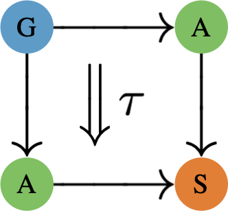

| Richard Samuelson |  |
| PhD student in the GATAS lab at the University of Florida |
| Office: | 206 Materials Engineering Building |
Address:
|
P.O. Box 116120
Gainesville, FL 32611 |
| Email: | rsamuelson@ufl.edu |
| Category theory, machine learning, and convex analysis. |
| B.S. in Mathematics, Trinity College, 2018 |